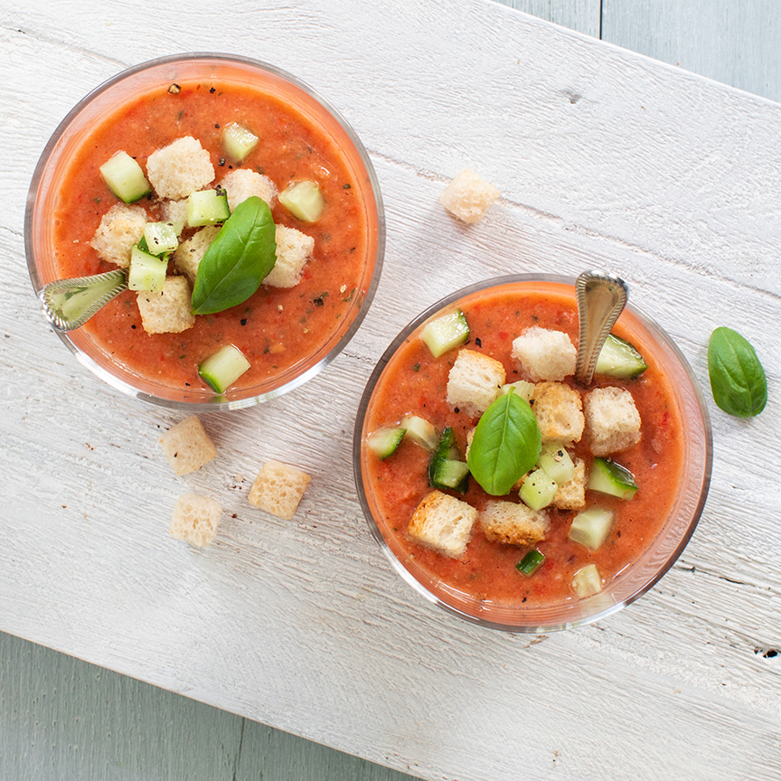

Gazpacho
Deze koude soep is een prima voorgerecht.
Ingrediënten
- 75 ml olijfolie
- 2 tenen knoflook
- 500 gr tomaten (van goede kwaliteit)
- 3 eetlepels rode wijnazijn
- 1 rode ui
- 1 komkommer
- snuf peper en zout
- 1 sneetje brood.
- 1 geroosterde paprika (uit pot)
- ½ rode peper (naar smaak)
- croutons
- Verse basilium voor garnering
Bereidingswijze
- Snijd de tomaten en rode ui in grove stukken en doe in een blender. Bewaar ¼ van de komkommer en snijd de rest ook in stukken en voeg toe aan de blender. Doe de olijfolie, knoflook, rode wijnazijn en rode peper toe en mix door elkaar.
- Voeg dan de gegrilde paprika en het brood toe en mix nogmaals goed door. Breng de gazpacho op smaak met peper en zout. Als het goed is, is de gazpacho precies de juiste dikte. Maar als de gazpacho toch te dik is kun je een beetje water toe voegen, is hij te dun dan voeg je wat extra brood toe.
- Schenk de gazpacho in glaasjes en zet ze minimaal 1 uur in de koelkast zodat de soep goed koud wordt. Snijd de overgebleven komkommer in kleine blokjes en garneer samen met de croutons en basilicum over de glaasjes gazpacho.
- Gazpacho is lekker als voorgerechtje of bij de tapas en wordt ijskoud geserveerd. Met dit recept maak je ongeveer 1 liter gazpacho, goed voor 4 grote of 6 kleine glaasjes.

Tip serveer ijskoud